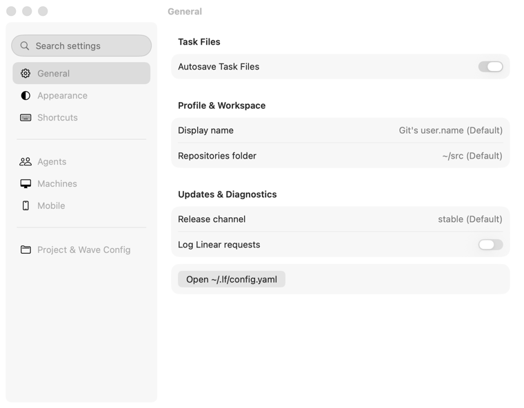
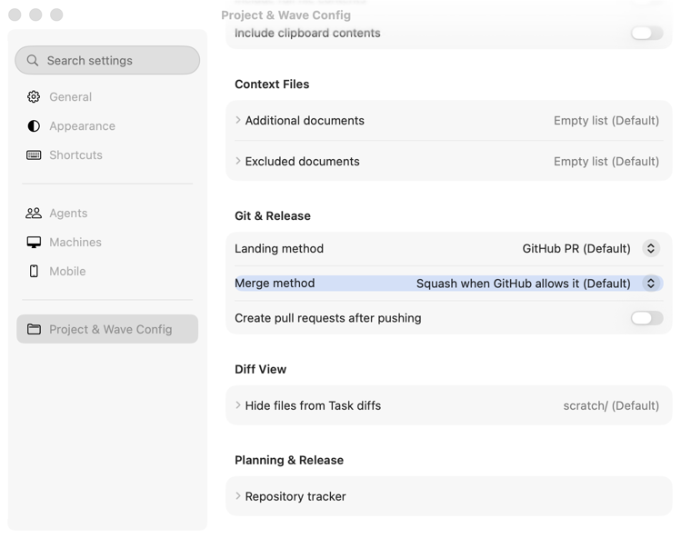

Settings Pane Redesign · Ship Review (Policy B)
1. What ships
The redesigned macOS Settings window (⌘,) now follows Policy B (1b, 2a): six clean personal/global panes (General, Appearance, Shortcuts · divider · Agents, Machines, Mobile) separated by quiet dividers from one dedicated Project & Wave Config pane at the bottom.

Git's user.name (Default), ~/src (Default), stable (Default)), and Open ~/.lf/config.yaml.
Applies to (checkout/Wave + collapsed Skill or Graph step) and Save in (My vs. Shared). Every control displays its real effective value (codex (from Shared repository settings), Off (Default)) instead of “Inherited”.
merge_method jumps to the row in Project & Wave Config, highlights it, and shows human-readable defaults (GitHub PR (Default), Squash when GitHub allows it (Default)).Also hardened in this pass
- No “Inherited” anywhere: unset rows show their actual default or inherited source (e.g.
codex (from Shared repository settings));In effectprovenance shows only when the file declares the key or a non-builtin layer participates. - Instant checked Reset + Undo: simple controls reset immediately with human-titled Undo (
⌘Z), including emptied number fields; previewed Reset stays on raw YAML disclosures. - Automatic server reconnect: both Personal and Project scopes keep their last reading visible while disconnected, pause edits, and automatically reconnect (1–30 s backoff) when the server comes back (verified at 11–16 s in QA round 5).
- Clean checkout
git status: config write locks moved under$LF_HOME/locks/config/so Settings writes never leave stray lock files in repositories. - Toolbar cleanup: removed the unused sidebar-toggle toolbar strip in Settings.
2. How to try it
Say “launch demo” here and I’ll build the isolated Loopflow Dev Settings.app from 031a057c against a fresh private demo server so you can eyeball Light/Dark, Appearance, and Project & Wave Config live.
3. What is likeliest to surprise you
Explicit nullappears in a Picker only when already declared in YAML (not offered as a menu option to author a no-op null, while still preserving and resetting hand-written YAML nulls).- Search lists personal agent defaults first, then Project & Wave Config overrides, opening each at its own destination.
Open ~/.lf/config.yamlcreates an empty mapping if the personal file doesn’t exist yet; searching for a file-only global key (pools,ondemands,forward.*) highlights that button.- Unused sidebar-toggle toolbar strip is removed so the Settings window stays fixed-sidebar like System Settings.
4. Findings left outside the PR
| Finding | Detail | Proposal |
|---|---|---|
| F1 · Live Dark mode & final eyeball pass | Unlocked captures verified Light mode at compact 760 × 592; Dark mode and your live feel check on the second beauty pass are still yours to inspect. | Demo now or at verify Say “launch demo” to inspect live, or advance to delivery. |
| F2 · Disconnect banner wording | During a plain server restart, ServerClient.swift:305’s shared string reads “Loopflow server unavailable or owned by another account” without mentioning automatic retry. |
Drop Shared across Desktop beyond Settings; leave for a server-status pass. |
F3 · Program Done vs. Available |
Raised earlier in this chat: ProgramStatusState.done renders “Done” on active Task rows after process exit 0. |
Own Task Separate from Settings; file if you want it tracked. |
5. Questions
1. Next step for PR #2033
1a Launch a live demo of 031a057c right now so I can check Light/Dark and feel it.
1b Looks ready — continue feature to delivery (reflect → gate → land, which also runs full CI on PR #2033).
1c Specific tweaks to make before shipping (tell me what).
2. Separate Task for Program Done vs. Available (F3)?
2a File a standalone Task for it.
2b Skip for now.